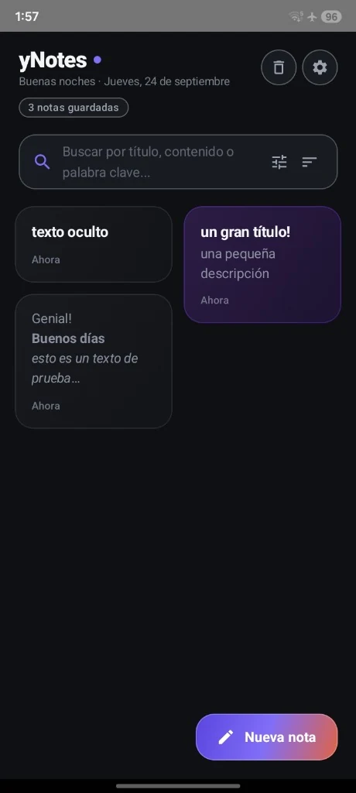
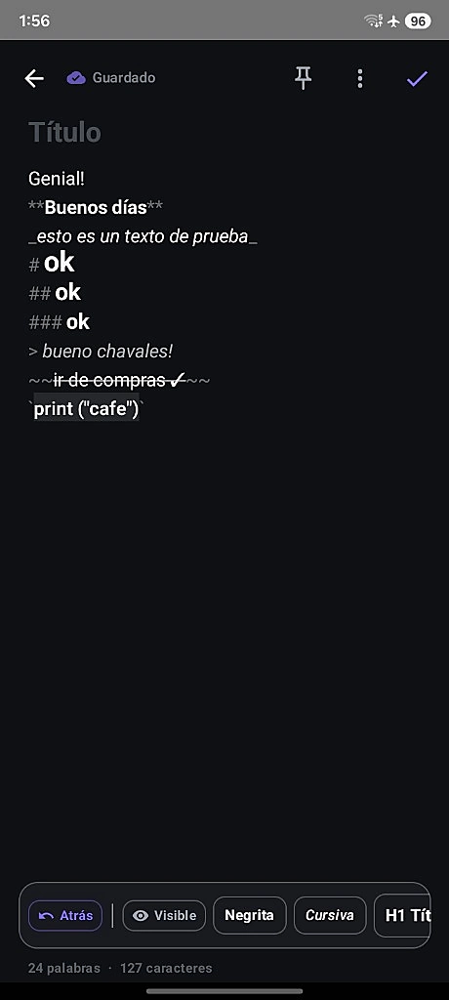
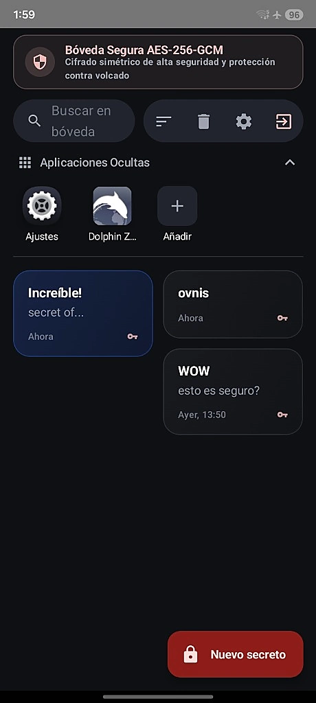
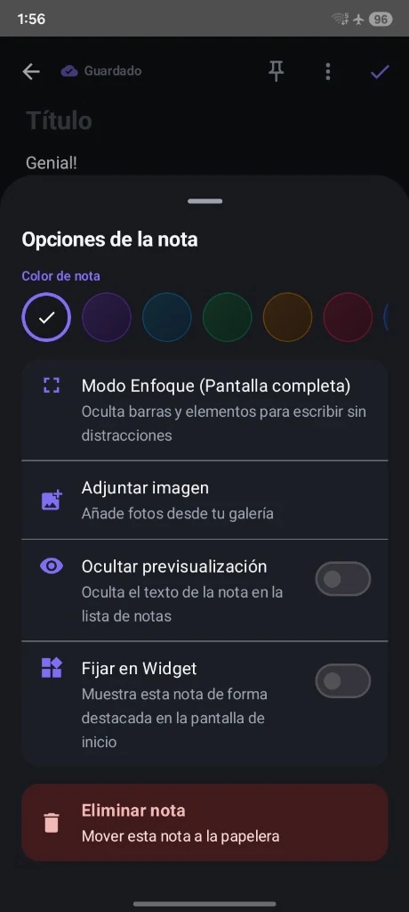
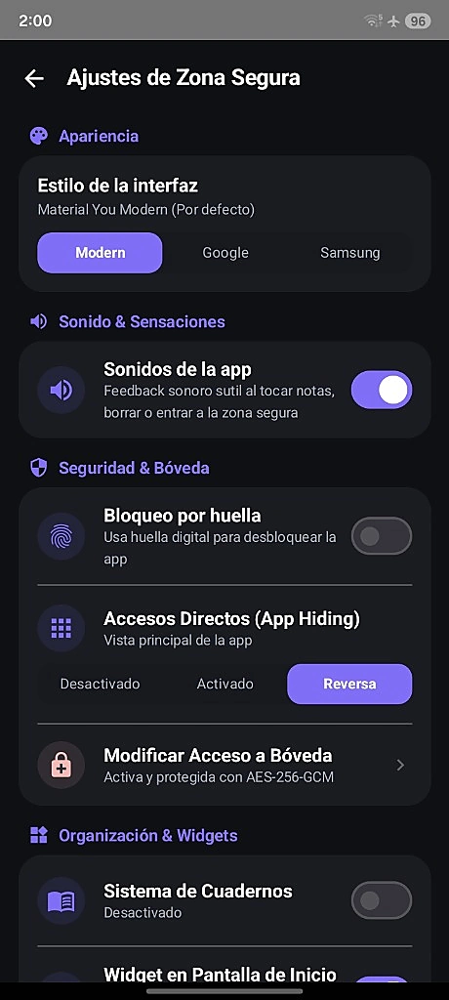

Tus pensamientos más íntimos, bajo llave y con total calma.
yNotes es una aplicación nativa para Android diseñada para quienes valoran su intimidad: notas en formato Markdown enriquecido, organización fluida y una Bóveda Segura blindada con cifrado de alta seguridad.

Diseñada para protegerte de verdad, no de palabra.
No recopilamos, no enviamos y no procesamos tus datos fuera de tu propio teléfono móvil. Todo se almacena de forma local e inviolable.
Cero Permiso de Internet
yNotes no solicita el permiso android.permission.INTERNET en su manifiesto. Es matemáticamente imposible que una nota salga de tu dispositivo a la red.
Android Keystore por Hardware
Las llaves criptográficas se generan y protegen dentro del procesador seguro de tu teléfono (TEE / StrongBox). Nadie, ni siquiera otras apps con root, puede extraer tus claves.
Biometría Directa del SO
Utilizamos la API oficial BiometricPrompt de Android. yNotes nunca ve ni almacena tus huellas dactilares; solo recibe la confirmación criptográfica del sistema.
Camuflaje y App Hiding
Modo de accesos directos señuelo para disimular la entrada a tu zona privada mediante iconos y nombres inocuos, despistando a cualquier observador casual.
| Característica de Seguridad | yNotes (Nativo) | Apps Típicas en la Nube |
|---|---|---|
| Permiso de Acceso a Internet | ✓ No solicitado (0% Red) | ✕ Obligatorio |
| Almacenamiento de Notas | ✓ 100% Local en dispositivo | ✕ Servidores de terceros |
| Bóveda Cifrada AES-256-GCM | ✓ Cifrado simétrico fuerte | ✕ Texto plano o cifrado en tránsito |
| Rastreadores o Telemetría | ✓ 0 librerías de analíticas | ✕ Firebase, Mixpanel, Crashlytics |
| Código Fuente Auditable | ✓ Código Abierto (MIT) | ✕ Código Propietario cerrado |
Pensada para escribir, organizar y descansar la mente.
Cada detalle de la interfaz ha sido esculpido con Jetpack Compose para brindar fluidez inmediata y respuesta táctil sutil.
Editor Markdown en Vivo
Añade formato a tus ideas sin complicaciones: negritas, cursivas, encabezados H1-H3, listas de tareas interactivas, citas textuales y bloques de código con un contador continuo de palabras y caracteres.
Bóveda Segura de Secretos
Guarda tus notas más sensibles tras una capa adicional de protección con AES-256-GCM. Incluye un botón dedicado para "Nuevo Secreto" y distintivos visuales de llave criptográfica.
Temas Visuales Versátiles
Personaliza el estilo visual de toda la aplicación según tu gusto: alterna con un solo toque entre Material You Modern (por defecto), Google Notes o Samsung Notes.
Paleta de Color por Nota
Clasifica y reconoce tus apuntes al instante asignando un tono propio a cada nota: violeta profundo, azul medianoche, verde esmeralda, ámbar cálido o carmesí.
Ocultar Previsualización
¿Tienes apuntes confidenciales en el feed general? Activa el interruptor "Ocultar previsualización" para que solo tú puedas ver el texto al pulsar sobre la nota.
Modo Enfoque & Widgets
Oculta barras para redactar a pantalla completa sin distracciones, y ancla tus notas imprescindibles o listas de la compra en la pantalla de inicio de Android con widgets nativos.
Explora yNotes pantalla por pantalla
Capturas reales tomadas directamente de la aplicación. Diseñada con amor, ritmo visual y contrastes cuidados.
Pantalla Principal Limpia y Elegante
Tus notas organizadas con máxima legibilidad y acceso veloz.
- Saludo dinámico según la hora del día y contador de notas guardadas.
- Buscador instantáneo por título, contenido o palabra clave con filtros avanzados.
- Tarjetas con distribución inteligente tipo masonry y soporte de previsualización oculta.
- Botón flotante con degradado suave para redactar una nueva nota al instante.




Instala yNotes en tu teléfono Android
Instalación directa, limpia y libre de rastreadores. Descarga el paquete firmado o compílalo tú mismo.
APK Oficial (GitHub Releases)
Paquete Android firmado listo para instalar
F-Droid & Código Fuente
Para entusiastas del software libre y auditoría
yNotes está preparada con receta oficial de compilación para su inclusión en el catálogo de F-Droid. Todo el código fuente está disponible abiertamente bajo licencia libre MIT.
Cómo instalar el APK en 3 sencillos pasos:
-
Descarga el APK
Pulsa en el botón de descarga para obtener el instalador oficial más reciente desde GitHub Releases.
-
Permite orígenes desconocidos
Si Android te solicita confirmación, pulsa en Ajustes y activa "Permitir desde esta fuente" para tu navegador o explorador de archivos.
-
Instala y Disfruta
Confirma la instalación de yNotes. Ábrela y comienza a escribir con total calma y privacidad.
Preguntas Frecuentes
Transparencia técnica absoluta sobre cómo funciona y custodia tus datos yNotes.
El 100% de tus notas se guardan de forma exclusiva en la memoria interna de tu propio teléfono móvil (mediante base de datos SQLite y preferencias cifradas). Ninguna información sale jamás a ningún servidor en la nube, empresa o tercero.
yNotes está concebida como una aplicación Offline-First por diseño. Funciona de manera idéntica tanto si tienes cobertura 5G, Wi-Fi o estás en mitad del desierto en Modo Avión. No depende de conexión para ninguna de sus funciones.
La Bóveda Segura utiliza el algoritmo criptográfico AES-256-GCM (Galois/Counter Mode), el estándar más alto de cifrado simétrico autenticado. Las claves de cifrado están protegidas por el Android Keystore del procesador. Además, implementa mecanismos de protección contra volcado de memoria (RAM dumping) y bloqueo biométrico.
Al ser una aplicación con privacidad estricta y sin servidores centrales, no existen puertas traseras ni botones de recuperación por correo electrónico. Si olvidas tu clave y no tienes configurada la huella dactilar, nadie (ni siquiera el creador de la app) podrá descifrar tus notas de la bóveda. Esto garantiza que nadie más pueda acceder a tu información sin tu consentimiento.
No. yNotes es completamente gratuita, sin publicidad, sin micropagos y sin telemetría oculta. Es un proyecto de software libre creado con la filosofía de brindar una herramienta de escritura limpia y tranquila.
yNotes requiere Android 8.0 (Oreo) o superior. Está optimizada para pantallas modernas AMOLED con tasas de refresco fluidas (90Hz / 120Hz) y es compatible con cualquier dispositivo Android de los principales fabricantes (Samsung, Xiaomi, Google Pixel, Motorola, etc.).